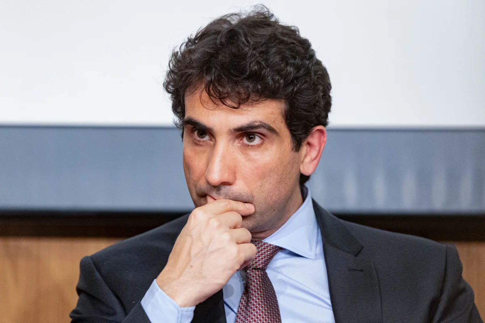

economia
Galípolo afirma que desconfiança na economia pode manter juros elevados por anos
11/11/2026 às 03:36 (horário de Cuiabá)

O presidente do Banco Central, Gabriel Galípolo, afirmou nesta terça-feira que a desconfiança e a perda de credibilidade na economia brasileira podem manter os juros de longo prazo em níveis altos por vários anos. A declaração foi feita em São Paulo durante evento promovido pela Associação Brasileira de Câmbio (Abracam).
Segundo Galípolo, a percepção de risco dos investidores está atrelada a choques cambiais históricos e não se resolve apenas com reformas ou normas econômicas. Ele destacou que breves períodos de estabilidade não são suficientes para diminuir o prêmio de risco, pois a memória de episódios negativos permanece, sendo necessária uma fase prolongada sem choques para consolidar a confiança.
O dirigente também abordou os reflexos cambiais sobre a dívida pública, pontuando que quedas acentuadas na cotação do real podem comprometer a rentabilidade dos credores ao converterem seus ganhos para dólares, mesmo que a maior parte dos títulos do governo seja emitida em moeda nacional.